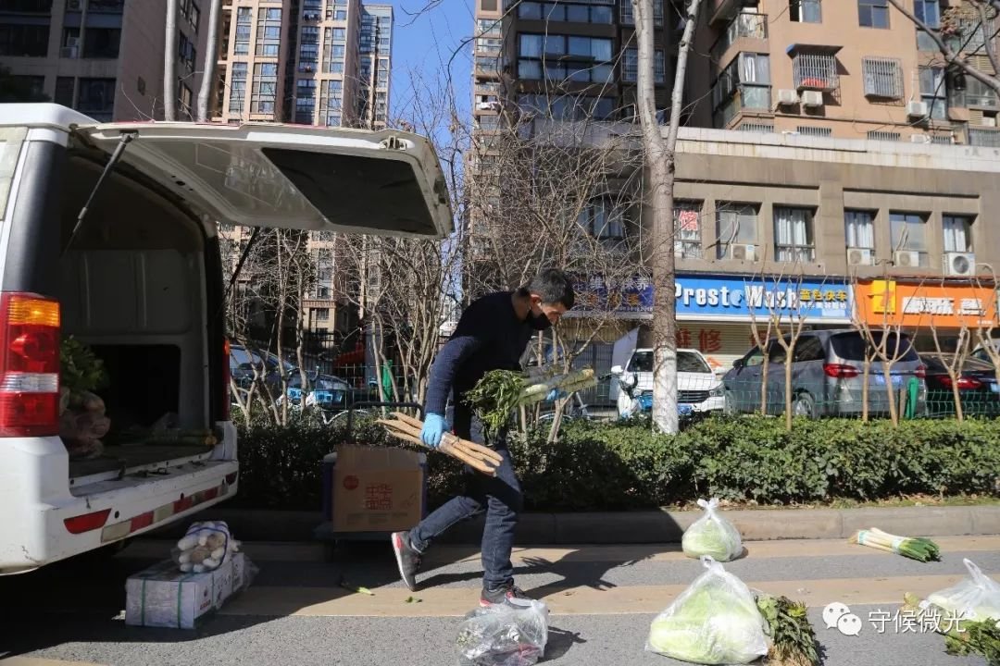
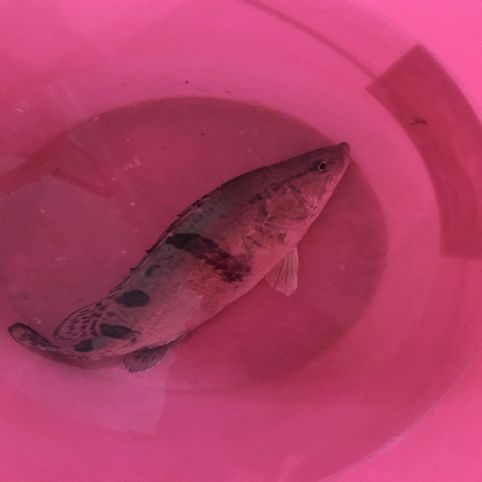

疫情之下，武汉市民的餐桌之战｜深度报道
原文链接 备份链接 记者/杨宝璐 实习记者/胡琪琛 *编辑/计巍 宋建华* 林楠做的登记表 2月11日，武汉开始实行小区封闭管理，宅家里抗疫的武汉居民不得不面对又一重困难：如何买到每天饭桌上需要的蔬菜。 城市几乎停摆，但生活却不能。吃饭问 …
若干年后回望，这一定是一段值得铭记的日子。因为新冠肺炎疫情，许多家庭无法团圆。疫情数据地图的每次刷新都令人揪心。我们和千万武汉人在一起，这不只是一句安慰，因为没有人能够置身事外。
之前，我们向用户征集这段时间的故事，鼓励大家写下属于自己的“武汉日志”。现在，我们挑选出其中的几篇，分享给大家。
医生们追求，有时去治愈、常常去帮助、总是去安慰。我们相信，尽可能分享有关此次疫情的事实，对他人就是一种安慰剂，能够帮助社会共克时艰。
如果你还有愿意记录下来的故事，欢迎继续发给我们，文字、图片、视频均可，如果您没有时间成文或拍摄，可提供线索并留下联系方式。
要求真实、原创，文字内容不少于1000字，发送时请注明署名及联系方式。
中国青年报社征集邮箱：wuhanstory@126.com

2月16日，湖北省武汉市，送菜小哥许可在为取单的小区居民摆放货品。中国青年报 赵迪/摄
作者 | 曹瑾
如果不看日历，我已记不清楚武汉“封城”多少天了。这一个多月以来，我们努力习惯着这种足不出户的生活，小家伙也不闹着出去玩了，仿佛忘记了外面还有一个大大的世界。
武汉市民的微信里，恐怕都有一个业主群，七八个团购群，这些群成了我们生活的窗口，成了我们彼此慰藉的空间。哪怕有几百条未读消息，也要一条一条地过一遍，生怕自己遗漏了任何重要疫情信息，生怕自己错过了任何一次必要的团购。
我们购买生活必需品的难度也随着防控升级不断增加。一开始还可以去超市选购，后来限时限行限购，再后来就只能团购……我们每天都要关注着购物途径和方式的变化。
2月11日，武汉发布第12号通告，开始封小区，我们接到的通知是每户每周可以一人出去两次采购生活必需品等物资。我赶着出去买了菜、水果、牛奶、纸巾等。14号下午1点又准备出去买鸡蛋、面粉之类的物资。
我在小区门口排队领出行票，凭票才可以进超市和菜市场，我身份证的地址不是现在的住址，担心不通过，就随身带了户口本。领票点并没有查看我的身份证，只是要求报具体住址，姓名，手机号码。量完体温，我接过来两张珍贵的通行票，揣在上衣口袋里，拉上口袋拉链。
到了超市，先出示通行票，量体温，我告诉超市工作人员还需要去菜市场，她就没有收我的票，只是在票上用红色的马克笔做了个三角形的标记。
在超市，我先躲着人多的地方走，去人少的货架那里找所需要购置的东西。最后买了酵母、面粉、榨菜，老抽，白糖、纸巾……有的货架上已经是空的了，火腿肠、方便面、牛奶、速食食品都没有了。一进门就看到5公斤的面粉只有两袋，我赶紧找了个购物篮，先把面粉装进去，又拿了一小袋2公斤的面粉。结账出来，超市也差不多要关门了。超市营业时间是上午10点到下午2点。菜市场是营业到下午3点。
进菜市场也要量体温，我把有标记的那张票拿了出来，就被收走了。也就意味着我从菜市场出来后，除了回家，哪里都不能去了。
我买了鸡蛋，补了点蔬菜，看到有藕，也买了一根。看到有个百货店开门，里面有一次性雨衣卖，就买了3件，想着这些可以作为简单的购物防护服用。
电瓶车又被塞得满满的，我赶紧回家。到家后，把口罩、浴帽、手套摘下来，换一双手套把东西归置好，就冲进浴室洗澡，洗完澡消毒手机、眼镜、双手。
15号，武汉下雪了，难得一见的大雪，小家伙站在阳台上，看着外面的大雪手舞足蹈，哈哈大笑，这是他人生中第一次见到真正的雪。这一天，疫情防控的规格又升级了，要求小区全封闭管理。

2月17日，看到业主群里发的消息说，菜市场有新鲜猪肉了，每天供应500公斤。每人限购3斤，不知道是怎么个限购的办法，想着估计会很多人去买，家里还有月初团购的冻肉，先这么吃吧。
18日，又得到通知说居民不能出去买菜了，超市也不对个人营业了。只能以社区为单位进行团购，一般30-50份起送。
19日，听到通知说要建网格。居民不能出楼栋，通过一个微信小程序线上购物，购买的东西由网格员派送到楼栋门口。
20日，这个微信小程序上线了。当天9：00-11：00选购套餐，第二天上午10：30开始配送到各网格，由网格的工作人员和志愿者们送到楼栋门口。由于供应数量有限，第一天没抢到。还好当天物业还组织了蔬菜团购，成功买到蔬菜套餐一份。下午5点去物业取菜，第一批菜发完了，第二批还有一个小时，回家就得洗澡，不回家又感觉自己被感染的风险在增加。最后决定找了一个空的地方站着等，离别人远一点，保护别人也是保护自己。一个小时后，菜终于拿到了，还在物业买了一袋5千克的面粉，感觉自己没白等。在外一个多小时，回家洗澡洗衣服，消毒完毕后，才开始吃晚饭。
业主群里接到通知，物业不再帮忙团购蔬菜等物资，尽量选择在微信小程序购物并由网格员配送到楼栋门口。那样更安全、方便。
那个微信小程序也在不断改进，听大家的反馈意见进行调整。目前有蔬菜套餐、肉类套餐、粮油套餐、调料套餐、水果套餐、荤食套餐、乳品套餐，甚至还有零食套餐和日用百货套餐等。但是，有人发到群里的照片让我们还有疑虑。大家在群里会问今天的蔬菜套餐怎么样，菜新鲜不新鲜，肉类套餐的肥肉多不多。有时候，我们只是需要某种东西，但是不得不为此购买整个套餐。所幸，这两天的反馈都好评比较多。应该是越来越丰富，越来越符合生活要求了。特殊时期，有物资供应的保障就不错了，我们还是很感恩、感动的。
我们希望物业继续组织小区里的团购，但物业明确给有困难的、年纪很大的业主提供特别的购物服务，并把主要精力放在疫情防控、小区消毒等事项上。
21日，业主群里发了最新的疫情通告，我们所在的单元有一例疑似病例。这让我们大吃一惊，单元群里进行了小范围的排除法，虽然最后结果还不明朗，但是我们那几天是不敢外出了。
小区团购群里的消息很多，往往是一人发团购信息，很多人呼应，用不了多久就成团了。然后再来商议如何接货、如何分发，既要保证安全，又要低调小心。如果因为取货聚集，被人举报了，那可不是闹着玩的。
后来，有人发了盒马鲜生的团购群二维码，我扫码加入，然后就看到好多同小区的业主加入了。群主联络盒马鲜生的工作人员，制定群规，报备给物业，招募志愿者分发物资。
25日上午10点，终于轮到我们小区团购了。我订购了一份蔬菜套餐和一份水产套餐，一个半小时后，水产套餐售罄。我告诉孩子爸爸团到了鱼，两条，一条鲈鱼，一条鳜鱼。他笑着说：“终于有鱼吃了！一个多月没见过鱼了！”然后就开始谋划怎么吃，是清蒸还是做成鱼火锅，还是烤鱼……是啊，距离我们上次吃鱼已经过去了快两个月了。
晚上6点多，盒马鲜生的物资派送过来了。群主带着5名志愿者去接物资，有人带了胶带、剪刀、尺子等工具，每隔1.5米贴上胶带。群主在群里叫号，按照序号分批次去拿。全程谨慎小心，报了序号，拿到蔬菜和鱼，顺利交接，轻声对志愿者说声谢谢，迅速离开现场。当我把蔬菜和鱼拿回家后，宝爸一把接过鱼，说：“鳜鱼还活着呢！”鳜鱼先被养起来，鲈鱼直接晚上吃。他去做鱼，我赶紧去洗澡。

小家伙站在水桶旁，拍着手笑着，不停地说：“鱼……哇”，虽然发音不是很清楚，但他整个晚上都沉浸在有鱼的兴奋中。想伸手逗鱼玩，袖子都弄湿了。
26日一大早，他刚穿好衣服就光脚跑到水桶那里去看鱼。鱼成了他的玩伴，他把小汽车，小狗，海洋球，饼干什么的都往水桶里放。
盒马鲜生购物群里，有人把做好的鱼的照片晒出来，难掩开心。群主呼吁大家低调，不要发出去，群里不能加人了。怕人多容易被举报。有人说：“昨天晚上接货的感觉像是特工”。如今，“搞个团购，倒像是做贼一样。”

我看到洪山微邻里发布的有15家淡水鱼团购单位提供淡水鱼的消息，看到长江日报提供的33家线上团购的超市、小程序、APP，也许明天，团购会变得更亲民更方便些吧。
每天看着无数的人为武汉疫情防控努力着、拼命着，还有那么多的生命因疫情而逝去。我们这些还能够居家自我隔离，还有心思为吃喝努力的人恐怕是当前武汉最幸福的人了吧。
中国青年报·中国青年网出品
微信编辑 | 陈轶男

觉得好看请点这里
原文链接 备份链接 记者/杨宝璐 实习记者/胡琪琛 *编辑/计巍 宋建华* 林楠做的登记表 2月11日，武汉开始实行小区封闭管理，宅家里抗疫的武汉居民不得不面对又一重困难：如何买到每天饭桌上需要的蔬菜。 城市几乎停摆，但生活却不能。吃饭问 …
原文链接 备份链接 一个漫长的三十天熬过去，不知道能不能写到下一个三十天。同事们陆陆续续返工，有搭普通火车颠簸回的，有花几百从农村坐黑车走小路，也有和其他人拼车自驾的。西安刚出的复工政策只需要做核酸检测，无需隔离14天，直接拿结果去上班， …
原文链接 备份链接 小区内隔着窗户聊天的人 （图片由郭晶提供） 这是我的朋友郭晶的日记。 记录了封城期间在武汉独居的外地女性的真实生活体验和心理感受。 这些文字见证了郭晶如何从适应突发危机到重建日常生活，再到尝试帮助他人的过程。 想及时获 …
原文链接 备份链接 他们理解小区被封，理解只能选择被塞了四大包汤圆的团购套餐，理解菜价成倍上涨，理解要继续忍受生活上的不便，才有可能早一点等来结束的一天。 文 | 谢婵 编辑 | 小豆 武汉伢王嘉兴给父母打电话，得知小区业主群里推荐 …
原文链接 备份链接 一级批发商并没有太多涨价，大型超市的价格也相对稳定，但经过中间环节，居民最终支付的菜价上涨明显。共有33家电商平台可以提供生鲜外卖服务，一些社区团购的菜价高、质量参差不齐、购买不便，居民希望服务改进的呼声较高 文 |《 …